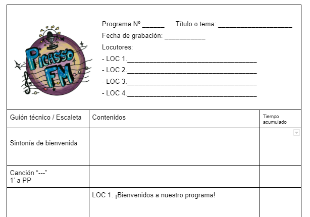

Ya tenemos una idea de lo que queremos hacer, incluso hemos buscado información y hasta tenemos a alguien de nuestro interés para hacerle una entrevista. Ahora, hemos de convertir toda esta planificación en un podcast y será necesario crear una escaleta y un guion técnico-literario, imprescindible para su grabación y edición posterior. Lo comprenderemos mejor con el siguiente tutorial:
Graba tu podcast para PICASSO FM
El lenguaje de la radio
Ya sabemos cuál será la estructura de nuestro programa y es el momento de redactar el guion de continuidad, ese documento del que os hablaba en el tutorial y que recoge todos los detalles técnicos y literarios del podcast.

1º Compartimos el guion
Hacemos una copia en Drive de la plantilla para crear un guion de radio y la compartimos con todos los integrantes del equipo, así como con el profesor o profesora.
2º Delimitamos bloques y elementos
Trasladamos a la columna de la izquierda las decisiones tomadas en la actividad anterior (sintonías, bloques, locutores, efectos y otros elementos sonoros).
3º Redactamos
Cada miembro es responsable de redactar el guion de la parte que le corresponda, pero todos participan en su supervisión, para garantizar su coherencia, adecuación y corrección.
4º Controlamos el tiempo
Si disponemos de un tiempo limitado por algún motivo, es conveniente ir sumando los tiempos de cada bloque y elemento en la columna de la derecha, dedicada al control del tiempo acumulado.
Por último, es importante saber que la radio se caracteriza por un uso particular de la lengua: con un estilo sencillo, claro, ágil y con preferencia por las frases cortas, puesto que los oyentes suelen realizar otras actividades mientras nos escuchan y no nos prestan su atención al 100%. Tened en cuenta estos consejos y las recomendaciones del siguiente enlace.
Una vez terminado el guion, realizad una lectura en voz alta para comprobar que "suena" igual de bien al leerlo que cuando lo pensabais al escribirlo.
Obra publicada con Licencia Creative Commons Reconocimiento Compartir igual 4.0